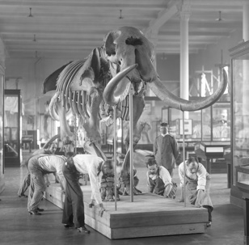
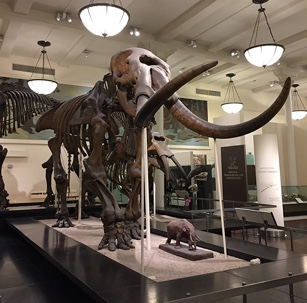

Current Hall: Wallach Orientation Center
Research Library
From humble beginnings...
Current Hall: Research Library
Millstein Hall of Advanced Mammals
A story of humble beginnings


1893
This would be some text about the history of this hall as narrated by a historian person. The Paul and Irma Milstein Hall of Advanced Mammals is one of two halls in the Lila Acheson Wallace Wing of Mammals and Their Extinct Relatives, which together tell of the great diversification and sudden extinctions of this group of animals.
1900

1938

Current Hall: Vertebrate Origins